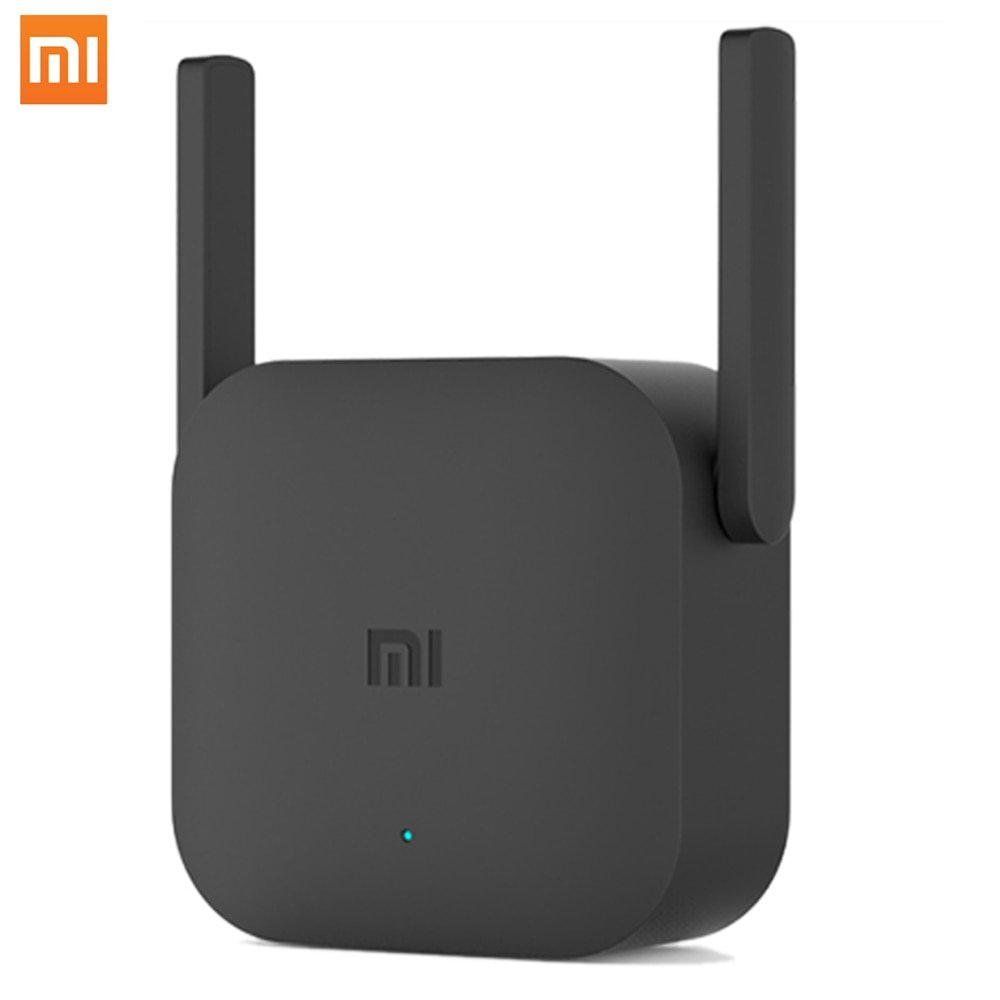
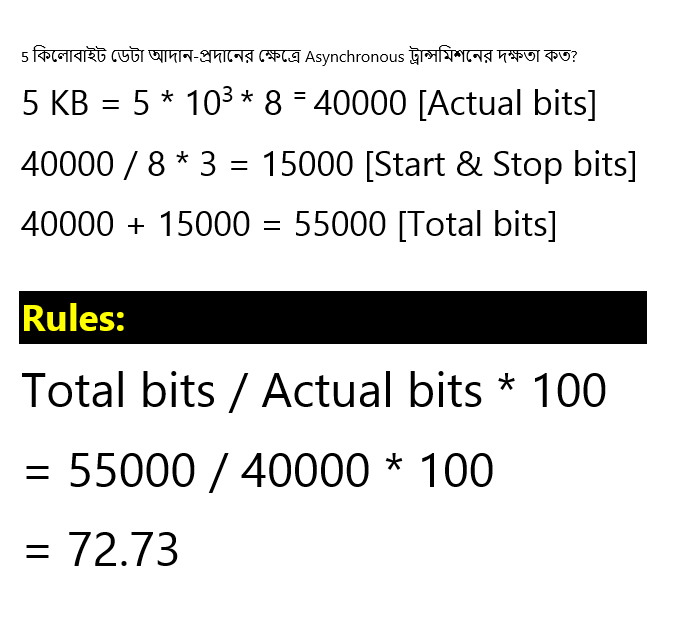
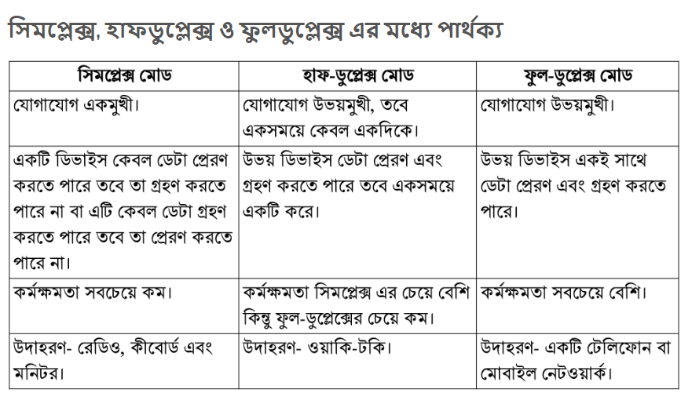
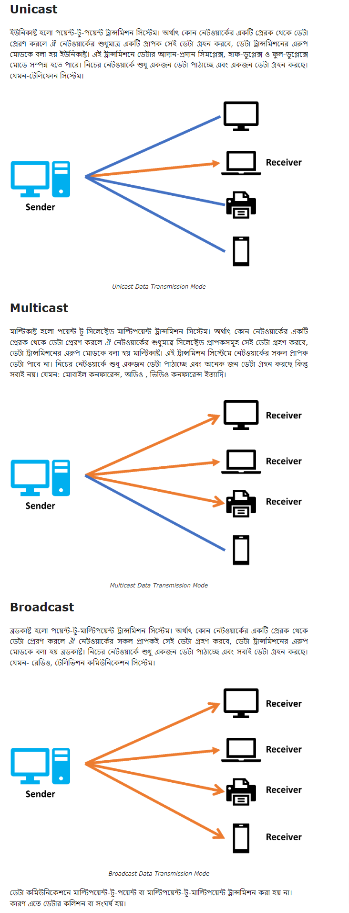
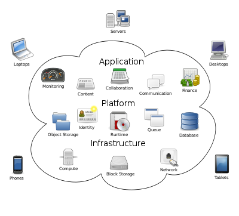
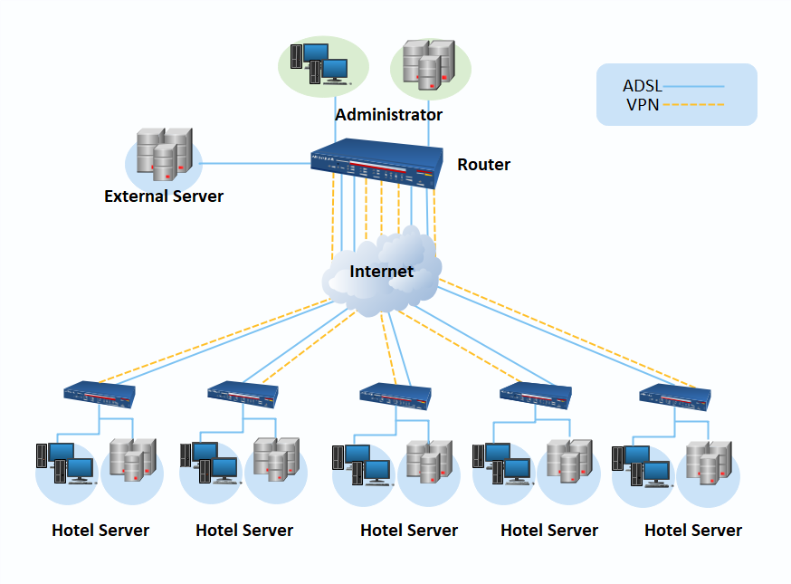

Communication System
Data Communication


Data হচ্ছে কোন একক তথ্য।
Information হচ্ছে কতগুলো তথ্যের সমষ্টি।
ডেটাকে একটি বাক্যের পদের সাথে তুলনা করা যেতে পারে। আর ইনফরমেশন হচ্ছে সেই বাক্যটি।


এক স্থান হতে অন্যস্থানে যে কোনো মাধ্যমে যে কোনো ধরনের তথ্য স্থানান্তর করাই হচ্ছে কমিউনিকেশন
যে পদ্ধতির মাধ্যমে যোগাযোগ প্রযুক্তি ব্যবহার করে তথ্য আদান প্রদান করা হয় তাই কমিউনিকেশন সিস্টেম
ডেটা কমিউনিকেশন বলতে বিভিন্ন মাধ্যমে ইলেকট্রনিক ডাটা স্থানান্তর করাকে বোঝায়।
আরো সহজ ভাবে বলতে গেলে ডেটা কমিউনিকেশন এমন একটি প্রক্রিয়া, যে প্রক্রিয়ার মাধ্যমে দুই বা ততোধিক কম্পিউটারের মধ্যে ডিজিটাল ইনফরমেশন স্থানান্তরিত হয়
Data Communication এর উপাদান ৫ টি।
উৎস (Source) প্রেরক (Transmitter) মাধ্যম (Medium) গ্রাহক / প্রাপক (Receiver) গন্তব্য (Derstination)
উৎস (Source) :যে ডিভাইস হতে ডেটা পাঠানো হয়, তাকে উৎস বলে।
যেমন - কম্পিউটার, টেলিফোন, ওয়ার্কস্টেশন, ইত্যাদি ।
প্রেরক (Transmitter) : উৎস হতে ডেটা নিয়ে যে যন্ত্র কমিউনিকেশন মাধ্যমে পাঠায় তাকে প্রেরক বলে।
মাধ্যম (Medium) : যার মাধ্যমে ডেটাকে এক স্থান থেকে অন্য স্থানে পাঠানো হয় তাকে মাধ্যম বা কমিউনিকেশন চ্যানেল বলে। যেমন - রেডিওওয়েভ, মাইক্রোওয়েভ, তার, স্যাটেলাইট ইত্যাদি ।
প্রাপক (Receiver) : কমিউনিকেশন মাধ্যমে ডেটা যার কাছে পাঠানো হয় তাকে গ্রাহক বা প্রাপক (Receiver) বলে । প্রাপক যন্ত্র হিসেবে মডেম ব্যবহার করা হয়। এখানে যুক্ত মডেম কম্পিউটারের অ্যানালগ সংকেতকে ডিজিটাল সংকেতে পরিণত করে।
গন্তব্য (Destination) : গন্তব্য হচ্ছে ডেটা পাঠানোর সর্বশেষ স্থান। যেমন- সার্ভার, প্রিন্টার, ফ্যাক্স মেশিন, পার্সোনাল কম্পিউটার।
যে ইলেকট্রনিক ডিভাইসের মাধ্যমে মডুলেশন ও ডি মডেলেশন প্রক্রিয়া সম্পন্ন করে প্রেরক ও প্রাপক কম্পিউটারের মধ্যে ডেটা আদান-প্রদানে সাহায্য কর কাকে মডেল বলে.
MOdulation এবং DEM odulation এই দুইটি শব্দকে এক করেই MODEM শব্দটি এসেছে।
মডেম ডেটা কমিউনিকেশন সিস্টেমের একটি নেটওয়ার্কিং ডিভাইস।
এই ডিভাইসের কাজ হলো D2A এবং A2D
অর্থাৎ, ডিজিটাল সংকেতকে অ্যানালগ সংকেতে পরিবর্তনের প্রক্রিয়াকে মড্যুলেশন এবং এনালগ সংকেতকে ডিজিটাল সংকেতে পরিবর্তনের প্রক্রিয়াকে ডিমড্যুলেশন বলা হয়।

নেটওয়ার্কের সাথে সংযুক্ত ডিভাইস।

রিপিটার হল একটি ইলেকট্রনিক ডিভাইস যা একটি সংকেত গ্রহণ করে এবং এটি পুনরায় প্রেরণ করে

ডেটা ট্রান্সমিশন হওয়ার জন্য প্রেরক ও প্রাপকের মধ্যে একটি সুনির্দিষ্ট পদ্ধতি থাকতে হয় এই পদ্ধতিকে ডেটা ট্রান্সমিশন মেথড বলে।
ডেটা ট্রান্সমিশন মেথডের প্রকারসমূহ :
তারের সংযোগ সংখ্যার ভিত্তিতে ডেটা ট্রান্সমিশন পদ্ধতি দুই প্রকারের।
১. সমান্তরাল ডেটা ট্রান্সমিশন (Parallel Data Transmission)
২. অনুক্রম ডেটা ট্রান্সমিশন (Serial Data Transmission)
সমান্তরাল ডেটা ট্রান্সমিশন (Parallel Data Transmission) : প্রেরক ও প্রাপকের মধ্যে সমান্তরালে ডেটা স্থানান্তর করলে তাকে সমান্তরাল ডেটা ট্রান্সমিশন বলে।
এখানে একাধিক চ্যানেলের মাধ্যমে একই সাথে একাধিক ডেটা বিট প্রেরণ করা হয়।
প্রতিটি চ্যানেলে একই সময়ে একটি বিট গ্রহণ করে।
ডেটা দ্রুত ট্রান্সফার হয়।
ব্যয়বহুল। কারন অনেক তার/চ্যানেল দরকার হয়।
Computer - Printer
অনুক্রম ডেটা ট্রান্সমিশন (Serial Data Transmission) : অনুক্রম ডেটা ট্রান্সমিশনে ডেটা বিটগুলো একের পর এক চ্যানেলে প্রেরণ করা হয়।
অর্থাৎ এই ডেটা ট্রান্সমিশনে ডেটা পর্যায়ক্রমে আদান প্রদান করা হয়।
এই ডেটা ট্রান্সমিশন-এ ডেটা ট্রান্সমিশন-এ ডেটা চালানোর জন্য একটি লাইন বা চ্যানেল-ই যথেষ্ট।
তুলনামুলক খরচ কম।
ধীরগতি সম্পন্ন।
?
অ্যাসিনক্রোনাস ট্রান্সসিশনে প্রেরক যখন খুশি তখন ডেটা প্রেরণ করতে পারে, গ্রাহক সবসময়েই সেই ডেটা গ্রহণ করার জন্য প্রস্তুত থাকে।
শুধু তাই নয় একবার ডেটা পাঠিয়ে তার পরবর্তী সময় আরেকবার ডেটা পাঠানোর মাঝখানে যতক্ষণ ইচ্ছা ততক্ষণ সময় নেয়া যায়।
ডেটা পাঠানোর আগে একটি স্টার্ট বিট পাঠানো হয় এবং সেই বিটটি দেখে গ্রাহকযন্ত্র বুঝতে পারে ডেটা আসতে শুরু করেছে এবং তার ক্লক সেই বিটের শুরুর সাথে সমন্বয় করে নেয়।
ডেটা পাঠানো শেষ হওয়ার পর একটি বা দুইটি স্টপ বিট পাঠানো হয় এবং সেটি দেখে গ্রাহক যন্ত্র বুঝতে পারে ডেটা পাঠানো শেষ হয়েছে।
যখন প্রয়োজন তখন ডেটা প্রেরণ করা যায় বলে এই ক্ষেত্রে প্রাইমারি স্টোরেজ ডিভাইসের (কম্পিউটারে ব্যবহৃত RAM, Cache, or CPU memory ইত্যাদি) প্রয়োজন হয় না। ধীর গতিতে অল্প পরিমাণ ডেটা পাঠানোর ক্ষেত্রে এই পদ্ধতির ব্যবহার সুবিধাজনক।
অ্যাসিনক্রোনাস ট্রান্সমিশনের একটি উদাহরণ হচ্ছে কম্পিউটারের কী-বোর্ড। এখানে একটি কী (Key) চাপার পর পরবর্তী কী চেপে টাইপ করার মধ্যবর্তী সময় সীমা অসম বা অনির্ধারিত হতে বাধ্য। এজন্যই এই ট্রান্সমিশন পদ্ধতির নাম অ্যাসিনক্রোনাস রাখা হয়েছে।

সিনক্রোনাস ডেটা ট্রান্সমিশনকে বলা যায় বিরতিহীন ডেটা ট্রান্সমিশন।
এই পদ্ধতিতে বিরতিহীনভাবে প্রেরক যন্ত্র থেকে গ্ৰাহক যন্ত্রে ডেটা পাঠানো হয়। যেহেতু প্রেরিত ডেটা ব্যবহার করে গ্রাহক যন্ত্র তার ক্লককে সমন্বিত করে তাই প্রেরণ করার জন্য কোনো ডেটা না থাকলেও আইডল সিকোয়েন্স (idle sequence) হিসেবে পূর্ব নির্ধারিত ডেটা পাঠানো হয়।
সিনক্রোনাস ডেটা ট্রান্সমিশন পদ্ধতিতে প্রেরক-স্টেশনে প্রথমেই ডেটাকে প্রাইমারি স্টোরেজে (কম্পিউটারে ব্যবহৃত RAM, Cache, or CPU memory ইত্যাদি) সংরক্ষণ করে ডেটার ক্যারেক্টারগুলোকে ব্লক বা ফ্রেম আকারে ভাগ করে নেয়।
প্রতিবার একটি করে ব্লক বা ফ্রেম ক্লকের সাথে সমন্বয় করে সমান বিরতি দিয়ে প্রেরণ করা হয়।
প্রতিটি ব্লক-ডেটার শুরুতে 1 বা 2 বাইটের একটি হেডার ইনফরমেশন এবং ব্লক- ডেটার শেষে একই পরিমাপের একটি ট্রেইলার ইনফরমেশন সিগন্যাল পাঠানো হয় এবং বিশাল নেটওয়ার্কে গন্তব্য খুঁজে বের করার জন্য এর মাঝে সাধারণত প্রেরক ও গ্রাহককে চিহ্নিতকরণের সংখ্যা বা অ্যাড্রেস দেয়া থাকে।
গ্রাহক যন্ত্র এই হেডার সিগন্যাল ব্যবহার করে প্রেরকের ক্লক-স্পীডের সাথে সিনক্রোনাইজ বা সমন্বিত করে। ট্রেইলার ব্লকের শেষ নির্দেশ করে এবং কোনো কোনো ক্ষেত্রে ব্লকের ভেতরকার ভুল নির্ণয় এবং সংশোধনে সহায়তা করে।
প্রযুক্তিগতভাবে এ পদ্ধতি অপেক্ষাকৃত জটিল এবং ব্যয়বহুল হলেও বেশি ব্যান্ডউইথের ডেটা দূরবর্তী স্থানে পাঠানোর জন্য এটি ব্যাপকভাবে ব্যবহৃত হয়। তাই বড় ধরনের নেটওয়ার্কসহ মোবাইল ফোন নেটওয়ার্ক, টি.ভি. নেটওয়ার্ক ইত্যাদি ক্ষেত্রে এটি অপরিহার্য।

অ্যাসিনক্রোনাস ও সিনক্রোনাস -এর একটি মিশ্র পদ্ধতি হচ্ছে আইসোক্রোনাস ট্রান্সমিশন।
এ প্রক্রিয়ায় অ্যাসিনক্রোনাস পদ্ধতির স্টার্ট ও স্টপ বিটের মাঝখানে সিনক্রোনাস পদ্ধতিতে ব্লক আকারে ডেটা ট্রান্সফার করা হয়।
যেহেতু পুরোটা সিনক্রোনাস নয়, তাই স্টোরেজ ডিভাইসে ডেটা সংরক্ষণ না করেই যখন প্রয়োজন তখন সেই ডেটা ট্রান্সমিট করা যায়।
সাধারণত রিয়েল টাইম অ্যাপ্লিকেশনে এর প্রচলন বেশি।
বিভিন্ন মাল্টিমিডিয়া কমিউনিকেশন যেমন, অডিও বা ভিডিও কল এর ক্ষেত্রে এই পদ্ধতিতে ডেটা ট্রান্সমিশন হয়ে থাকে।
B = 10 1
k = 10 3
M = 10 6
G = 10 9
T = 10 12
P = 10 15
Math Rule
Total Bit / Actual Bit * 100


Bandwidth = Data Transmission Speed
কোন নেটওয়ার্কের মধ্য দিয়ে প্রতি সেকেন্ডে ডাটা পরিবহনের সক্ষমতাকে ব্যান্ডউইড্থ বলে।
অর্থাৎ একটি নির্দিষ্ট সময়ে ডেটা স্থানান্তরের হারকে ব্যান্ডউইথ বলে।
ব্যান্ডউইড্থ কে Band Speed বলা হয়।
ব্যান্ডউইথ Bit Per Second (bps) এ হিসাব করা হয়।
অর্থাৎ ব্যান্ডউইডথ পরিমাপের একক হচ্ছে : bps (bit per second)
Bandwidth (ব্যান্ডউইডথ) তিন ধরণের হয়ে থাকে। 👇🏿
ন্যারো ব্যান্ড (Narrow band) : এই ব্যান্ডের ডেটা গতি ৪৫ থেকে ৩০০ bps পর্যন্ত হয়।
এই ব্যান্ডউইড্থ কে Sub-Voice Band বলে।
এই ব্যান্ড টেলিগ্রাফিতে ব্যবহার করা হয়।
ন্যারো ব্যান্ড কে Sub-Voice ও বলা হয়।
ভয়েস ব্যান্ড (Voice band) : এই ব্যান্ডের ডেটা গতি ৯৬০০ bps পর্যন্ত হয়।
এই ব্যান্ড ব্যবহার করা হয়
* টেলিফোন লাইনে
* কম্পিউটার থেকে প্রিন্টারে ডেটা স্থানান্তরের সময়
* কার্ড রিডার থেকে কম্পিউটারে ডেটা স্থানান্তরের সময় ইত্যাদি।
ব্রড ব্যান্ড (Broad band): এটি উচ্চগতি সম্পন্ন ব্যান্ডউইডথ। এই ব্যান্ডের ডেটা গতি ১ মেগা বিট পার সেকেন্ড (১০২৪ বিট পার সেকেন্ড) থেকে অনেক বেশি গতি সম্পন্ন হয়ে থাকে। এই ব্যান্ডউইথ ব্যবহার করা হয় কো- এক্সিয়াল ক্যাবলে, অপটিক্যাল ফাইবারে, কমিউনিকেশন, মাইক্রোওয়েভ কমিউনিকেশনে ইত্যাদি।
মোবাইল শব্দটি এসেছে “mobility” থেকে, যার অর্থ হচ্ছে সঞ্চারণশীল বা চলমান।
অর্থাৎ এই ডিভাইস ব্যবহার করে ব্যবহারকারীরা চলমান অবস্থায় থেকে যেকোনো যায়গা থেকে যোগাযোগ করতে পারেন।
মোবাইল ফোন হচ্ছে এক ধরনের ইলেকট্রনিক ডিভাইস যাকে Cellular Communication System-এর মাধ্যমে ব্যবহার করা হয়।তাই মোবাইল ফোনকে সেলফোন বা হ্যান্ডসেট বলে।
মোবাইল ফোন ব্যবহারকারীরা একে অপরের সাথে মোবাইলের মাধ্যমে একটা কিংবা অনেকগুলো Base Station-এর আন্ডারে যোগাযোগ করতে পারেন।
Cellular Communication হচ্ছে এক ধরনের Duplex System, যেখানে একই সাথে sender এবং receiver একইসময় যোগাযোগ করতে পারেন।
সেলুলার ফোনের ইতিহাস শুরু হয় ১৯২০ সালে, মোবাইল রেডিও আবিস্কারের পর। ১৯৪০ সালে মার্টিন কুপার মটোরলা (সিলিকন ভ্যালি কোম্পানীর প্রতিষ্ঠাত আধুনিক মোবাইল ফোন আবিষ্কার করেন। তাই তাকে মোবাইল ফোনের জনক বলা হয়।
এই সময় হতে যুক্তরাষ্ট্রে মোবাইল ফোন শুরু হয়। পরে ১৯৫০ সালে ইউরোপ ও ২য় বিশ্বযুদ্ধ চলাকালিন সময় যুক্তরাষ্ট্রের সেনাবাহিনী সর্বপ্রথম মোবাইল ফোন ব্যবহার শুরু করে।
সেল সিগন্যাল এনকোডিং - বিভিন্ন ট্রান্সমিটার থেকে প্রেরিত সিগন্যালগুলো আলাদা করার জন্য ব্যবহৃত এনকোডিং পদ্ধতিকে বলা হয় সেল সিগন্যাল এনকোডিং ।
সেল সিগন্যাল এনকোডিং ৩ প্রকার। যথা -
1.FDMA -Frequency Division Multiple Access.
2.TDMA -Time Division Multiple Access.
3.CDMA -Code-Division Multiple Access.
বর্তমানে প্রচলিত মোবাইল ফোন প্রযুক্তিকে প্রধানত দুইভাগে ভাগ করা যায়। যথা-
1. GSM - Global System For Mobile Communication.
2. CDMA - Code Division Multiple Access.
জিএসএম (GSM): GSM হল TDMA (Time Division Multiple Access) এবং FDMA (Frequency Division Multiple Access) এর সম্মিলিত একটি চ্যানেল অ্যাকসেস পদ্ধতি। এই প্রযুক্তিতে মোবাইল ডেটা ট্রান্সমিশনের ক্ষেত্রে উচ্চগতির প্রযুক্তি GPRS (General Packet Radio Service) এবং EDGE (Enhanced Data Rate for GSM Evolution) ব্যবহৃত হয়।
সিডিএমএ (CDMA): এই প্রযুক্তিতে ডেটা পাঠানো হয় ইউনিক কোডিং পদ্ধতিতে। CDMA যে পদ্ধতিতে ডেটা আদান-প্রদান করে তাকে স্প্রেড স্পেকট্রাম বলা হয়। এটি একাধিক ব্যবহারকারীকে একই ফ্রিকোয়েন্সির ব্যান্ড শেয়ার করার সুবিধা দিয়ে থাকে ইলেক্ট্রম্যাগনেটিক রেডিয়েশন কম হওয়ায় এই প্রযুক্তিকে গ্রীণফোন প্রযুক্তি বলা হয়। মোবাইল অপারেটর সিটিসেল এই প্রযুক্তি ব্যবহার করে।
মোবাইল ফোনের ক্রমবর্ধমান ব্যবহার ও উন্নয়নের এক একটি পর্যায় বা ধাপকে মোবাইল ফোনের প্রজন্ম বলা হয়।
এ পর্যন্ত আবিষ্কৃত মোবাইল ফোনের পাঁচটি প্রজন্মে ভাগ করা যায়।
প্রথম প্রজন্ম (First Generation-1G: 1979-1990)
দ্বিতীয় প্রজন্ম (Second Generation-2G: 1991-2000)
তৃতীয় প্রজন্ম (Third Generation-3G: 2001-2008)
চতুর্থ প্রজন্ম (Fourth Generation-4G: 2009-2020)
পঞ্চম প্রজন্ম (Fifth Generation-5G: 2020-Present)
Media Of Data Communication ()
Networking
দুই বা ততোধিক কম্পিউটারের মধ্যে সংযোগ স্থাপন।
1969 (USA Defense)
দুই বা ততোধিক কম্পিউটারের মধ্যে সংযোগ স্থাপন করে কম্পিউটার নেটওয়ার্ক তৈরির প্রধান উদ্দেশ্য হলো :
কম্পিউটার সমূহের মধ্যে বিভিন্ন প্রকার রিসোর্স শেয়ার করা এবং একসাথে কাজ করা।
নেটওয়ার্কের অন্তর্ভুক্ত কোনো কম্পিউটারের জন্য ‘রিসোর্স' হচ্ছে অন্য কম্পিউটারের এমন কোনো উপাদান বা সুবিধা যা তার কাছে নেই। যে কোনো কম্পিউটারের তথ্য কিংবা উপাদানগত সীমাবদ্ধতা এড়ানোর জন্য রিসোর্স শেয়ার করে কাজের সূক্ষ্মতা, গতি এবং ক্ষেত্র বা পরিধি অনেকগুণ বাড়িয়ে দেয়া যায়।
তাই কম্পিউটার নেটওয়ার্কিংয়ের মূল উদ্দেশ্যই হলো, কম্পিউটার ও আনুষঙ্গিক যন্ত্রপাতির সর্বোত্তম ব্যবহার নিশ্চিতের মাধ্যমে তথ্য এবং রিসোর্সসমূহ ব্যাপক সংখ্যক ব্যবহারকারীর কাছে সহজলভ্য করা।
রিসোর্স শেয়ার বলতে যা বোঝানো হয় তার মধ্যে উল্লেখযোগ্য হচ্ছে-
👉ইনফরমেশন রিসোর্স শেয়ার : যে কোনো বিষয়ে বিভিন্ন ধরনের ইনফরমেশন পাওয়ার জন্য এখন সবাই ইন্টারনেটের বিভিন্ন ওয়েবসাইট সার্চ করে। কিংবা একই প্রতিষ্ঠানের বিভিন্ন শাখার মধ্যে কম্পিউটার নেটওয়ার্কিংয়ের দ্বারা তাৎক্ষণিকভাবে তথ্য আদান-প্রদান করে দ্রুত ও সহজে কাজ সম্পাদন করা যায়।
👉সফটওয়্যার রিসোর্স শেয়ার : নেটওয়ার্কের মাধ্যমে সফটওয়্যার রিসোর্স শেয়ার করা যায়। এক্ষেত্রে একটি সফটওয়্যারই যদি নেটওয়ার্কভুক্ত সকল কম্পিউটারকে ব্যবহার করতে দেয়া হয় তবে একাধিক সফটওয়্যার ক্রয় না করে একটি সফটওয়্যার সবাই ব্যবহার করতে পারে। বিভিন্ন ব্যাংকে টাকা লেনদেনের জন্য যে ভিন্ন ভিন্ন কাউন্টারে ভিন্ন ভিন্ন কম্পিউটার ব্যবহার করতে দেখা যায় তা মূলত একটি সফটওয়্যারকেই সকলে শেয়ার করে থাকে। এতে প্রতিষ্ঠানের আর্থিক দিক দিয়ে ব্যাপক সাশ্রয় ঘটে।
👉হার্ডওয়্যার রিসোর্স শেয়ার : বিভিন্ন অফিস, ব্যাংক, কম্পিউটার ল্যাব, সাইবার ক্যাফেতে আমরা দেখতে পাই যে অনেক কম্পিউটার নেটওয়ার্কিং সুবিধা দ্বারা শুধু একটি প্রিন্টার সবাই ব্যবহার করছেন। এখানে মূলত প্রিন্টারটি সংযুক্ত থাকে সার্ভার কম্পিউটারে। অন্য কম্পিউটারগুলো (যাদেরকে ক্লায়েন্ট বা ওয়ার্কস্টেশন বলা হয়) নেটওয়ার্কভুক্ত থাকার কারণে সার্ভারের প্রিন্টারটি শেয়ার করতে পারে। আর এতে করে সংশ্লিষ্ট প্রতিষ্ঠানের আর্থিক সাশ্রয় ঘটছে।

Network 2 Types (As Ownership)
নেটওয়ার্ক স্থাপনের জন্য যে সব ডিভাইস ব্যবহার হয় তাকে বলা হয় নেটওয়ার্কিং ডিভাইস।
যেমনঃ 👇🏿

কোনো নেটওয়ার্কের অন্তর্ভুক্ত কম্পিউটার সমূহ একে অপরের সাথে সংযুক্ত থাকার কৌশলকেই Network Topology বলা হয়।
কম্পিউটার নেটওয়ার্কে সাধারণত নিম্নোক্ত ছয় ধরনের Topology ব্যবহার করা যায়।
যেমনঃ 👇🏿

Mesh (জাল)
যদি কোনো নেটওয়ার্কে ডিভাইস বা কম্পিউটারগুলোর মধ্যে অতিরিক্ত সংযোগ থাকে তাহলে তাকে বলা হয় মেশ টপোলজি।
সূত্র
সূত্র-1
মেশ টপোলজিতে যেহেতু প্রতিটি কম্পিউটার প্রতিটির সাথে সংযুক্ত থাকে তাই এ অর্থে এই নেটওয়ার্কের প্রথম কম্পিউটারটি শেষ কম্পিউটারের সাথে সংযুক্ত থাকে।
রিং টপোলজিতে প্রতিটি কম্পিউটারকে প্রতিটির সাথে অতিরিক্ত নোড দিয়ে সংযুক্ত করলেই তা মেশ টপোলজিতে রূপান্তরিত হবে।
উপাত্ত স্থানান্তর অপেক্ষাকৃত দ্রুতগতিতে হয়।
এ টপোলজিতে নেটওয়ার্ক ইন্সটলেশন ও কনফিগারেশন বেশ জটিল।
নেটওয়ার্কে অতিরিক্ত নোড স্থাপন করতে হয় বিধায় এতে খরচ বেড়ে যায়।
বেশী তারের প্রোয়জন হয়।
?
তুলনামুলক খরচ কম।
ধীরগতি সম্পন্ন।
?
তুলনামুলক খরচ কম।
ধীরগতি সম্পন্ন।
?
তুলনামুলক খরচ কম।
ধীরগতি সম্পন্ন।
?
তুলনামুলক খরচ কম।
ধীরগতি সম্পন্ন।
?
তুলনামুলক খরচ কম।
ধীরগতি সম্পন্ন।
?
Cloud Computing


Origin(উৎপত্তি)
অনেক আগে হতেই নেটওয়ার্ক Diagram(চিত্র/নকশা) আকাশ সময় User এবং Server এর মাঝে ইন্টারনেট অংশটিকে মেঘের ছবি দ্বারা বুঝানো হতো এরকম করেই ক্লাউড কম্পিউটিং শব্দটি এসেছে।আবার ক্লাউড কম্পিউটিং সেবা প্রদানকারী কোম্পানিগুলো দূরে কোন দেশ / ভিন্ন কোন মহাদেশে থাকে ঐসব কোম্পানিগুলো কে আমরা দূর আকাশের মেঘের সঙ্গে তুলনা করতে পারি আর ওখান হতে আমাদের কম্পিউটারে আশা সার্ভিস গুলো কে ফোঁটা ফোঁটা বৃষ্টির পানির সঙ্গে তুলনা করা করতে পারি।
Definition
ক্লাউড কম্পিউটিং (Cloud Computing) হল কম্পিউটার রিসোর্স যেমন- কম্পিউটার হার্ডওয়্যার, সফটওয়্যার, নেটওয়ার্ক ডিভাইস ইত্যাদি ব্যবহার করে কম্পিউটার নেটওয়ার্কের মাধ্যমে (বিশেষত ইন্টারনেট) কোনো সেবা প্রদান করা।প্রয়োজন অনুযায়ী নির্দিষ্ট সময়ের জন্য নির্দিষ্ট মূল্য প্রদান করে ইন্টারনেটের মাধ্যমে অন্যের Storage, Hardware, Software, ইত্যাদি ব্যবহার করার নামই হল ক্লাউড কম্পিউটিং।
Example
200 Guests In Home........Characteristics(বৈশিষ্ট্য)
মার্কিন যুক্তরাষ্ট্রের ফেডারেল সরকারের বাণিজ্য বিভাগের অধীনস্থ National Institute of Standards and Technology (NIST) দ্বারা সংজ্ঞায়িত ক্লাউড কম্পিউটিংয়ের নিম্নলিখিত ৫টি প্রধান বৈশিষ্ট্য বর্ণনা করেছেন-On-Demand Self-service: ক্রেতা চাহিবা মাত্রই সেবা প্রদানকারী প্রতিষ্ঠান সেবা দিতে পারবে। ক্রেতা তার ইচ্ছামতো যখন খুশি তার চাহিদা বাড়াতে / কমাতে পারবে।
Broad Network Access: ক্রেতা একটা স্ট্যান্ডার্ড বা সার্বজনীন প্রযুক্তিতে ব্যবহারযোগ্য ভিন্ন ভিন্ন পরিবেশ কিংবা ভিন্ন ধরনের প্রযুক্তি পণ্য ব্যবহার করে নেটওয়ার্ক ব্যবহার করতে সক্ষম হবে হবে। যেমন- ব্যবহারকারী একই সাথে মোবাইল ফোন, ট্যাবলেট, ল্যাপটপ, ওয়ার্কস্টেশন প্রভৃতি ডিভাইস ব্যবহার করার সুবিধা পাবে।
Resource Pooling: ব্যবহারকারীর প্রয়োজন অনুযায়ী নেটওয়ার্ক রিসোর্স যেমন- কম্পিউটার হার্ডওয়্যার, সফটওয়্যার, নেটওয়ার্ক ডিভাইস প্রভৃতি সংস্থাপন, পরিবর্তন বা আপগ্রেট করতে পারবে।
Rapid Elasticity: ব্যবহারকারী যেকোনো সময় তার চাহিদার প্রেক্ষিতে অভ্যন্তরীণ ও বাহ্যিক যেকোনো সুযোগ-সুবিধা, সেবার পরিধি, প্রভৃতি দ্রুত ও যথোপযুক্তভাবে নির্ধারণ করা বা পরিবর্তন করার ক্ষমতা রাখতে পারবে। অনেকক্ষেত্রে এটি স্বয়ংক্রিয়ভাবে সম্পপাদন করার ব্যবস্থা রাখা যায়।
Measured Service: বিভিন্ন পর্যায়ে ক্লাউড কম্পিউটিং ব্যবস্থা নিয়ন্ত্রণ ও রক্ষণাবেক্ষেণের কাজ স্বয়ংক্রিয়ভাবে করা যায়। যেমন- স্টোরেজ প্রসেসিং, নেটওয়ার্ক ব্যান্ডউইথ, ইউজার অ্যাকাউন্ট প্রভৃতি কাজ সহজভাবে ও স্বয়ংক্রিয়ভাবে সম্পন্ন করা যায়। বিভিন্ন রিসোর্সের কাজ, ক্ষমতা ও ব্যবহারের মাত্রা নিরূপণ প্রভৃতি কাজ সার্ভিস প্রোভাইডার ও ব্যবহারকারী উভয়ই দিক থেকে পর্যবেক্ষণ ও নিয়ন্ত্রণ করা।
১। রিসোর্স স্কেলেবিলিটি (Resource Scalability): ছোট বা বড় যেকোন ক্রেতার সকল ধরণের চাহিদাই মেটাতে হবে।
২। অন-ডিমান্ড (On-demand): ক্রেতা যখন চাইবে, তখনই সেবা দিতে হবে। ক্রেতা তার ইচ্ছা অনুযায়ী যখন খুশি তার চাহিদা বাড়াতে বা কমাতে পারবে।
৩। পে-অ্যাজ-ইউ-গো (Pay as you Go): এটি একটি পেমেন্ট মডেল। ক্রেতাকে আগে থেকে কোন পেমেন্ট করতে হবে না। ক্রেতা যতটুকু রিসোর্স যত সময়ের জন্য ব্যবহার করবে কেবলমাত্র তার জন্যই পেমেন্ট দিতে হবে।
Cloud-Computing Service
Cloud-Computing Service Providers
বড় কোম্পানিগুলো ক্লাউড কম্পিউটিং সেবা গ্রহণ করে
Cloud-Computing Types (Service)
Cloud-Computing Types (Model)
এসব ক্লাউডের সুবিধা হল যে কেউ এর সেবা নিতে পারবে।
এক্ষেত্রে যে টাকা দিবে সেই সার্ভিস পাবে এমন ক্লাউড কে বলা হয় পাবলিক ক্লাউড।
অনেক বড় কোম্পানি নিজের নানা কাজ করার জন্য নিজস্ব একটা ক্লাউড বানায়
এতে করে খরচ অনেক হচ্ছে, নিজস্ব ডাটা সেন্টার বসাতে হচ্ছে, ম্যানেজ করার জন্য লোক রাখা লাগছে
তবে এক্ষেত্রে সুবিধা হল কোন বড় কোম্পানিতে ১০টা ডিপার্টমেন্ট থাকলে দশটা ডাটা সেন্টার না বসিয়ে একটাকেই ক্লাউড মডেলে ভাগাভাগি করে ব্যবহার করা যায়
তবে পার্থক্য হল একটি ক্ষুদ্রতর কমিউনিটির লোকজনই এর সুবিধা নিতে পারবে।
এর সুবিধা হল কমিউনিটির মধ্যে ইউজার সীমাবদ্ধ থাকে বলে এখানে অনেক সমস্যা যেমন সিকিউরিটির সমস্যা নাই।
এর অসুবিধা হলো এখানে ক্লায়েন্টের সংখ্যা সীমিত বলে খরচ বেড়ে যায়
আর প্রাইভেট ক্লাউড এর ধারণক্ষমতা অতিক্রান্ত হয়ে গেলে পাবলিক ক্লাউডের সাহায্য নেয়া হয়
পাবলিক ক্লাউডের চেয়ে হাইব্রিড ক্লাউডের খরচ বেশি
কারণ স্থানীয় স্থাপনা তো এখানে তৈরি করতেই হচ্ছে
তবে স্থানীয়ভাবে কাজ করিয়ে নেয়ার সুবিধাগুলো থাকছে।
তার সাথে অতিরিক্ত চাহিদা মেটানোর একটা ব্যবস্থা এখানে থাকছে। পাবলিক ক্লাউডে পাঠানোর মাধ্যমে
Cloud-Computing Advantages
১। যেকোন স্থান থেকে যেকোন সময় ইন্টারনেটের মাধ্যমে ক্লাউড সেবা গ্রহণ করা যায়।
২। বিভিন্ন ধরনের রিসোর্স (হার্ডওয়্যার ও সফটওয়্যার ইত্যাদি) শেয়ার করে কোন ব্যক্তি বা কোম্পানির খরচ কমানো যায়।
৩। কোম্পানির অপারেটিং খরচ তুলনামূলক কম।
৪। ক্লাউডে সংরক্ষিত তথ্য যেকোন স্থান থেকে যেকোন সময় এক্সেস করা যায় এবং তথ্য কীভাবে প্রসেস বা সংরক্ষিত হয় তা জানার প্রয়োজন হয় না।
৫। সহজে কাজকর্ম মনিটরিং এর কাজ করা যায় ফলে বাজেট ও সময়ের সাথে তাল মিলিয়ে কর্মকাণ্ড পরিচালনা করা যায়।
৬। অধিক নির্ভরযোগ্য ও নিরাপদ সিস্টেম।
৭। একসাথে অনেক ডাটা সংরক্ষণ করা সম্ভব। সেই ডাটা কখনই হারিয়ে যাবে না বা নষ্ট হয়ে যাবে না। ক্লাউড কম্পিউটিং কোম্পানি গুলোর অনেক ডাটা সেন্টার থাকে। তাই আপনার ডাটা নিয়ে আপনাকে কনো চিন্তা করতে হবে না।
৮। ক্লাউড কম্পিউটিং এর মাধ্যমে অনেক উচ্চমান সম্পন্ন কাজ করা সম্ভব। প্রয়োজনীয় সকল সফটওয়্যার ব্যবহার করা সম্ভব যা হয়তো আলাদা টাকা দিয়ে কিনতে হতে পারত।
Cloud-Computing Disdvantages
১। ডেটা, তথ্য অথবা প্রোগ্রাম বা অ্যাপ্লিকেশনের উপর নিয়ন্ত্রণ থাকে না।
২। এটি দ্রুতগতি সম্পন্ন নয়।
৩। আবহাওয়া খারাপ জনিত কারণে বা ইন্টারনেট সংযোগ বিঘ্নিত হলে সার্ভিস বিঘ্নিত হয়।
৪। ক্লাউড সাইটটিতে সমস্যা দেখা দিলে ব্যবহারকারীরা তার সার্ভিস থেকে বঞ্চিত হন।
৫। তথ্যের গোপনীয়তা ভঙ্গের এবং তথ্য পাল্টে যাওয়ার অর্থাৎ হ্যাকিং হওয়ার সম্ভাবনা থাকে।
৬। তথ্য ক্লাউডে পাঠিয়ে দেওয়ার পর তা কোথায় সংরক্ষিত হচ্ছে বা কিভাবে প্রসেস হচ্ছে তা ব্যবহারকারীদের জানার উপায় থাকে না।
Networking Devices
Wait....
Short - Full form
| NIC | Network Interface Card |
|---|---|
| NIC | Network Interface Card |
| WiMAX | Worldwide Interoperability for Microwave Access |
| WiFi | Wireless Fidelity(বেতার বিশ্বস্ততা) |
| Internet | Interconnected Network |
Wait....
Wait....